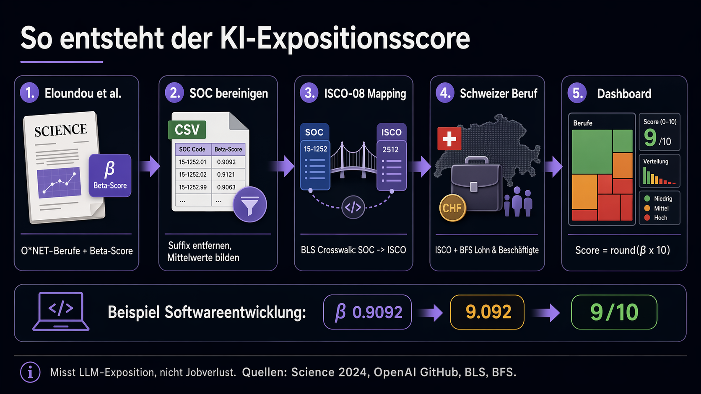

Analysen, Trends & Insights
Das Dashboard zeigt, wo Sprachmodelle berufliche Aufgaben beschleunigen können. Der Score misst LLM-Exposition, nicht Jobverlust, und macht die zugrunde liegenden Quellen transparent prüfbar.
Science 2024: Originaler Eloundou-Score
Peer-reviewed Basiswert: Beta x 10, gerundet. Misst LLM-Exposition, nicht Automatisierung oder Jobverlust.
Über diese Daten

Prüfpfad: von Quelle zu Score
Beispiel: Softwareentwickler/-in
So kann man es prüfen
- Beta-Wert im Detailpanel mit `Files for CC/eloundou_mapping_results.json` vergleichen.
- Score kontrollieren: `round(beta x 10)` muss dem angezeigten Wert entsprechen.
- Bei Berufen mit Badge "Plausibilisierung" die konkrete Tätigkeitsmischung prüfen.
Peer-reviewed Paper
Definition des LLM-Expositionsmasses und wissenschaftlicher Kontext.
Eloundou et al. (2024), Science OpenAI ProjektseiteExpositionsdaten
Berufsebene mit O*NET-SOC-Code und `dv_rating_beta`.
GitHub Repository `data/occ_level.csv` Lokale Kopie `occ_level.csv`Berufscode-Mapping
Übersetzung von SOC-2010 auf ISCO-08 via BLS.
BLS Crosswalk-Übersicht BLS `isco_soc_crosswalk.xls` Lokale Kopie CrosswalkSchweizer Arbeitsmarkt
Beschäftigte und Kontext zu Aufgabenprofilen aus BFS/SAKE.
BFS Arbeit und Erwerb BFS/SAKE Aufgaben und Digitalisierung 2022Dashboard-Prüfdaten
Lokale Arbeitsdateien für Mapping, Anleitung und automatisierte Checks.
Mapping-Ergebnis JSON Integrationsanleitung ValidierungsscriptHeute-Framework
Konservative 2026-Heuristik bis 24. April 2026: technische Exposition getrennt von Adoption, mit Sensitivität, Unsicherheit, Mapping und Mini-Reannotation.
Methodenpapier 2026 Generierte Scores JSON Generierte Scores CSV Sensitivitätsszenarien JSON Mini-Reannotation CSV Mapping-Tabelle CSV OpenAI GPT-5.5: Agentic Work OpenAI GPT-5.4: Computer Use OpenAI GPT-4.1: Coding, Long Context, Agents OpenAI GPT-4o: Text, Audio, Bild, Video Anthropic Computer Use Google Gemini: 1M Context Microsoft Work Trend Index Schweiz 2025LLM-Exposition (Beta-Score)
Eloundou, T. et al. (2024). "GPTs are GPTs: Labor market impact potential of LLMs." Science, 384, 1306-1308.
Das Beta-Mass bewertet pro Beruf, inwieweit LLMs die Erledigungszeit von Aufgaben um mindestens 50% reduzieren können. Formel: Beta = E1 + 0.5 x E2. Mapping von O*NET-SOC auf ISCO-08 via BLS-Crosswalk.
Zweite Sicht: Heute 2026
Der Original-Score bleibt die Basis. Die 2026-Sicht ist keine neue wissenschaftliche Replikation, sondern eine konservative Dashboard-Heuristik. Die Hauptansicht zeigt technische Exposition; Adoption wird separat dokumentiert.
Technisch: Beta = min(Cap, Original-Beta + Long-Context + Agentik + Multimodalität + Berufs-Override).
Adoptionsgewichtet: Beta = min(Cap, technische Beta + Adoption).
Beschäftigte
Bundesamt für Statistik (BFS)
Schweizerische Arbeitskräfteerhebung (SAKE) 2023
Erwerbstätige nach Beruf (ISCO-08)
Medianlöhne
BFS Lohnstrukturerhebung (LSE) 2022
Bruttolohn, Vollzeit, Median in CHF/Jahr
(Monatslohn x 13)
SOC-ISCO Mapping
Bureau of Labor Statistics (BLS)
ISCO-08 to SOC 2010 Crosswalk (2015)
Aggregation: O*NET-SOC -> SOC-2010 -> ISCO-08 -> CH-Berufe
So sollte man die Scores lesen
- Mapping ist eine Annäherung: Schweizer Berufsbezeichnungen decken nicht immer exakt einen O*NET- oder ISCO-Beruf ab. Je nach konkretem Tätigkeitsprofil kann die Exposition höher oder tiefer liegen.
- Die 0-10-Skala ist gerundet: Der präzisere β-Wert wird in den Details angezeigt. Rundungen nahe einer Kategoriengrenze sollten nicht überinterpretiert werden.
- "Sehr hoch" ist bewusst streng: Nur Score 8-10 wird rot markiert. Berufe mit 6 oder 7 sind trotzdem deutlich LLM-exponiert und verdienen Aufmerksamkeit.
- Heikle Zuordnungen sind kommentiert: Bei Berufen wie Logistik, Recht oder Koch/Köchin hängt der Score stark davon ab, ob administrative, analytische oder physische Aufgaben dominieren.
Wie wird der Score berechnet?
Das Eloundou-Verfahren in 4 Schritten
Eloundou et al. haben für ihren Science-Artikel (2024) jeden der 923 US-Berufe aus der O*NET-Datenbank in seine Einzelaufgaben zerlegt. Für jede Aufgabe wurde dann bewertet, ob ein LLM die Erledigungszeit um mindestens 50% reduzieren kann:
E2 = Anteil der Aufgaben, die ein LLM mit zusätzlichen Tools erledigen kann
β = E1 + 0.5 × E2
(Skala: 0.0 = keine Exposition, 1.0 = maximale Exposition)
Der Faktor 0.5 bei E2 berücksichtigt, dass Tool-unterstützte Automatisierung weniger unmittelbar ist als direkte LLM-Nutzung.
Beide Bewertungen (E1 und E2) wurden sowohl von menschlichen Experten als auch von GPT-4 durchgeführt.
Dieses Dashboard verwendet die GPT-4-Bewertung (dv_rating_beta), da sie konsistenter ist und von der KOF-Studie der ETH Zürich als Referenzmass verwendet wird.
Für die Schweizer Version haben wir die US-Berufscodes (O*NET-SOC) über den offiziellen BLS-Crosswalk auf den internationalen Standard ISCO-08 gemappt und dann den 72 Schweizer Berufen im Dashboard zugeordnet. Der β-Score (0.0-1.0) wurde mit × 10 auf die Dashboard-Skala (0-10) transformiert.
Warum hat nur Softwareentwicklung einen Score von 9/10?
Softwareentwickler/-innen haben mit einem β-Score von 0.91 die höchste LLM-Exposition aller 72 Berufe in diesem Dashboard. Das liegt daran, dass fast alle Teilaufgaben der Softwareentwicklung textbasiert sind und direkt von LLMs profitieren:
- Code schreiben - LLMs generieren funktionierenden Code in allen gängigen Sprachen
- Debugging - Fehlermeldungen analysieren und Fixes vorschlagen
- Code Review - Qualität, Sicherheitslücken und Best Practices prüfen
- Dokumentation - Docstrings, READMEs, technische Spezifikationen
- Tests - Unit-Tests und Testfälle generieren
- Refactoring - Code umstrukturieren und optimieren
Eloundou et al. aggregieren die Scores von "Software Developers" (β=0.87) und "Computer Programmers" (β=0.95), was den kombinierten Score von 0.91 ergibt.
Wichtig: Ein hoher Expositions-Score bedeutet nicht "der Beruf verschwindet". Er bedeutet: LLMs können die Produktivität in diesem Beruf massiv steigern. Softwareentwickler/-innen, die LLMs effektiv einsetzen, sind heute produktiver denn je - die Nachfrage nach Software steigt weiter. Der Score misst Exposition, nicht Ersetzbarkeit.
Was der Score nicht misst
Das Eloundou-Mass erfasst ausschliesslich LLM-Exposition - also ob Sprachmodelle wie GPT-4 oder Claude die Aufgaben beschleunigen können. Es misst nicht:
- Robotik & physische Automation - Deshalb haben Lagerfachleute (2/10) und Lastwagenfahrer/-innen (3/10) niedrige Scores, obwohl sie durch andere Technologien betroffen sein könnten
- Bild-KI (DALL-E, Midjourney) - Deshalb haben Grafiker/-innen nur 5/10, obwohl Bild-KI den Beruf stark verändert
- Autonomes Fahren - Nicht im Scope von Sprachmodellen
- Regulierung, gesellschaftliche Akzeptanz, Adoptionsgeschwindigkeit